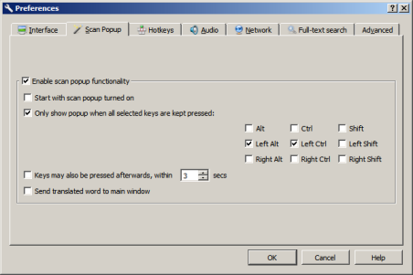
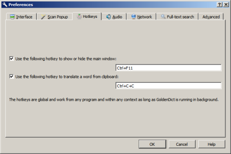
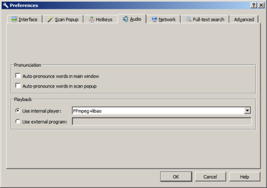
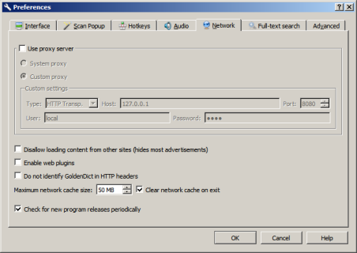
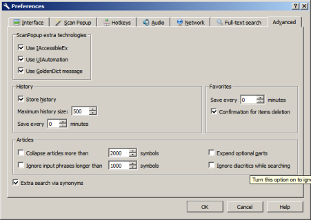

GoldenDict preferences dialog can be called via menu "Edit" -> "Preferences..." or by shortcut "F4". In contains several tabs.
\chapter6.1 Interface
Here you can tune GoldenDict interface.

Open new tabs in background. If this option is set the current tab still active when you open new tab. Else you will be switched to new tab immediately.
Open new tabs after the current one. If this option is set the new tab will be placed after current one else after last one.
Hide single tab. If this option is set the tab bar will be hidden if the only tab is opened.
Ctrl-Tab navigate tabs in MRU order. If this option is set the Ctrl+Tab hotkey will switch tabs as ones was used else as ones placed in the tab bar.
Enable system tray icon. If this option is set GoldenDict will create icon in the system tray at it start.
Start to system tray. If this option is set GoldenDict will be started in minimized to system tray state.
Close to system tray. If this option is set GoldenDict will minimize to system tray else to system taskbar.
Start with system. If this option is set GoldenDict will be started automatically after operation system start.
Double-click translates the word clicked. If this option is set the double click on word calls it translation. If Ctrl or Shift key is pressed for translation will be created a new tab.
Select word by single click. If this option is set the single click on word will select it.
Context menu dictionaries limit. This option set the maximum number of dictionaries in context menus.
Interface language. This option select the language for GoldenDict interface. After changing of language GoldenDict should be restarted.
Display style. This option select one from internal interface styles.
Help language. This option select the language for GoldenDict reference. "Default" means the interface language will be used as reference language. If no such reference exists the English reference will be used.
Add-on style. This option shows when the folder "styles" inside GoldenDict configuration folder contains at least one folder with user style. Such user style can include the "qt-style.css" file (interface tuning), "article-style.css" file (articles presentation tuning) and some extra files (icons, fonts etc.).
Note: To open the GoldenDict configuration folder you can use "Help" -> "Configuration Folder" menu command.
\chapter6.2 Scan popup

Enable scan popup functionality. If this option is set the  button will be shown on toolbar. This button turn on/off scanning of word under mouse cursor (only under Windows and MacOS), text selection (only under Linux X11) and clipboard changing.
button will be shown on toolbar. This button turn on/off scanning of word under mouse cursor (only under Windows and MacOS), text selection (only under Linux X11) and clipboard changing.
Note: This option don't affect calling popup window by hotkey.
Start with scan popup turned on. If this option is set the scanning mode will be turned on at GoldenDict start.
Only show popup when all selected keys are kept pressed. If this option is set the popup will not be shown until all selected keys are pressed.
Keys may also be pressed afterwards, within ... sec. This option set the maximum time after word selecting when selected in previous option keys should be pressed to call popup window (only under Linux X11).
Send translated word to main window. If this option is set the main GoldenDict window will be activated instead of popup window. The target word will be placed into search line of main window.
Show scan flag when word is selected (only under Linux X11). If this option is set the small icon window will be shown instead of popup window. Click on this window will show popup window.
Note: "Only show popup when all selected keys are kept pressed" and "Show scan flag when word is selected" are mutually exclusive. Only one can be turned on in the same instant time.
\chapter6.3 Hotkeys

Here you can set hotkeys to call popup window and/or to show/hide the main window. Just select corresponding line and press keys. These hotkeys are global and works from other applications.
If hotkey contains two parts it first part transfer to other applications and can work in ones as separate hotkey. To correct work of this procedure under Windows 8 and later start GoldenDict with rights of administrator.
\chapter6.4 Audio Here you can set parameters for playback of sound files from dictionaries.

Auto-pronounce words in main window. If this options is set the first found pronunciation will be automatically played after articles loading to main window.
Auto-pronounce words in scan popup. If this options is set the first found pronunciation will be automatically played after articles loading to popup window.
Use internal player. If this option is set the internal player will be used for playback. You can choose FFMpeg-based engine or Qt Multimedia (only for Qt5-based GoldenDict).
Use external program. If this option is set the sound file to play will be transferred to specified application as command line parameter.
\chapter6.5 Network Here you can set GoldenDict network parameters.

Use proxy server. If this option is set GoldenDict will use network connections via proxy server. You can use system proxy settings as well as set custom settings.
Disallow loading content from other sites. If this option is set GoldenDict will block access from loaded page to other sites.
Enable web plugins. This option allow GoldenDict to use NPAPI plugins installed in operation system to handle loaded pages.
Don't identify GoldenDict in HTTP headers. If this option is set GoldenDict will don't identify itself via HTTP headers. It usable if some website block requests from GoldenDict.
Maximum network cache size. Maximum disk space occupied by GoldenDict's network cache. If set to 0 the network disk cache will be disabled.
Clear network cache on exit. When this option is enabled, GoldenDict clears its network cache from disk during exit.
Check for new program releases periodically. If this option is set GoldenDict will periodically check the new release presence on goldendict.org site. Check interval is 2 days (or 2 hours if site now is inaccessible).
\chapter6.6 Full-text search Here you can set the full-text search parameters.

Allow full-text search for: If this option is don't set the full-text search completely blocked. If it is set below you can select local dictionary typed for full-text search.
Don't search in dictionaries containing more than ... articles This option allow to turn off full-text search in huge dictionaries like local Wikipedia or Wiktionary. Such huge dictionaries requires long time and many resources to index and may don't index at all if no memory enough.
\chapter6.7 Advanced Here you can set some other GoldenDict parameters.

Scan popup extra technologies (only under Windows). Here you can turn on/off additional technologies of retrieving word under mouse cursor in addition to classic technology with dll injecting and intercepting screen output functions. Such classic technology is not usable for many modern applications.
- Use IAccessibleEx. This option allows GoldenDict to ask other applications via IAccessibleEx interface. In order to this technology works well the corresponding interface must be implemented in target application. For example via such technology GoldenDict can interact with Internet Explorer 9 and later.
- Use UIAutomation. This option allows GoldenDict to ask other applications via UIAutomation interface. In order to this technology works well the corresponding interface must be implemented in target application. For example via such technology GoldenDict can interact with MS Visual Studio editor.
- Use GoldenDict message. This option allows GoldenDict to ask other applications by sending user message registered in Windows. In order to this technology works well a target application must can recognize such messages and reply to its. For example via such technology GoldenDict retrieve words from own article pages.
History. Here you can tune storing history of requests to dictionaries.
- Store history. If this option don't set GoldenDict will don't log requests to dictionaries at all.
- Maximum history size. Here you can set the maximum number of records in history. After the history size reach this value new records will replace oldest records.
- Maximum history size. Here you can set the maximum number of records in history. After the history size reach this value new records will replace oldest records.
- Save every ... minutes. Here you can set the interval of saving history to file. If interval set to 0 history will be saved only when program will be closed. If GoldenDict will crash all not saved history records will be lost.
Favorites. Here you can tune GoldenDict Favorites.
- Save every ... minutes. Here you can set the interval of saving Favorites to file. If interval set to 0 the Favorites will be saved only when program will be closed. If GoldenDict will crash all changes since last save will be lost.
- Confirmation for items deletion. If this option is set GoldenDict will ask confirmation for every operation of items deletion. Otherwise items will be deleted immediately.
Articles. Here you can set some options for articles presentation.
- Expand optional parts. This option affect dictionaries which mark some article areas as optional (now only ABBYY Lingvo .dsl dictionaries). If it is set these marks will be ignored and article will be shown completely. Else areas marked as optional will be hide and beside article header will be shown button
 . When you press this button the hidden areas will be shown and button will be changed to
. When you press this button the hidden areas will be shown and button will be changed to  . When you press this button the hidden areas will be hide again.
. When you press this button the hidden areas will be hide again. - Collapse articles more than ... symbols. If this option is set GoldenDict will automatically collapse more long articles. Such collapsed articles indicated by
 icon in "From dictionary..." heading above article text. When you press this icon or header article will be expanded and icon will be changed to
icon in "From dictionary..." heading above article text. When you press this icon or header article will be expanded and icon will be changed to  . When you press icon article will be collapsed.
. When you press icon article will be collapsed.Note: If only one article have found it will not be collapsed regardless of it size.
- Ignore diacritics while search. If this option is set GoldenDict will ignore diacritics in headwords while articles search. This option affect the local dictionaries only.
- Ignore input phrases longer than ... symbols. If this option is set GoldenDict will ignore text longer than presented length. This option affect the text transmitted via mouse-over, selection, clipboard or command line.
Extra search via synonyms. Turn this option on to enable extra articles search via synonym lists from Stardict, Babylon and GLS dictionaries.
\chapter6.8 Options adjustable via config file Some GoldenDict preferences can be changed only by manual editing of configuration file. This file have name "config" and located in GoldenDict configuration folder. You can find this folder via "Help" -> "Configuration Folder" menu command.
| Parameter | Meaning |
|---|---|
| maxPictureWidth | This parameter set maximum image width in ABBYY Lingvo .dsl dictionaries. More width images will be resized to this width. Mouse click on such resized image will create new tab with full-size image. If this parameter is 0 no images will be resized. Default value: 0 |
| maxHeadwordSize | This parameter set maximum headword length for ABBYY Lingvo .dsl dictionaries. More long headwords will be ignored while dictionary indexing. Default value: 256 |
| trackClipboardChanges (only under Windows and MacOS) | This parameter turn on/off tracking of clipboard changing. If popup window is enabled and tracking is enabled the popup window will be shown when clipboard content have changed. Allowed values: 0 - tracking is off, 1 - tracking is on. Default value: 0 |
| maxHeadwordsToExpand | This parameter set maximum number of dictionary headwords when GoldenDict create additional index entries for multi-word headwords which allow to search such headwords via its middle words. Creating of the such entries simplify headwords search but require more memory for indexing. It is strongly recommended to change this parameter only if some dictionary can't be indexed because lack of memory and only for indexing of this dictionary (and return parameter to default value after indexing). Value 0 means no limit. Note 1: This parameter affect indexing of the Aard, Slob, StarDict and Zim dictionaries. Note 2. This parameter don't affect already indexed dictionaries. Default value: 0 (no limit). |
Note: Before manual editing of the configuration file GoldenDict must be closed or all changes will be cancelled.